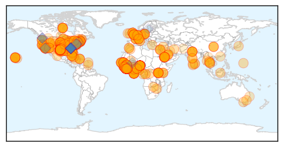
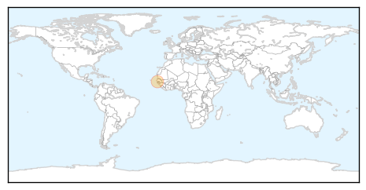

Ebola
30-Day Web Trend
2 alerts, 0 warnings
30-Day Twitter Trend
1 alerts, 0 warnings
Article Locations
Article Confidences
Top Articles:
- 1.000
- WKOW 27: Madison, WI Breaking News, Weather and Sports
- 1.000
- Patient evaluated for possible ebola at D.C.'s Howard University Hospital
- 1.000
- Why quarantines won’t stop Ebola from spreading in the U.S.
- 1.000
- D.C. hospital evaluating a patient who has Ebola-like symptoms
- 1.000
- Ebola virus: answering the 10 questions you were afraid to ask
- 1.000
- Minn. hospitals, health officials say they're well-prepared for Ebola
- 1.000
- The Facts About Ebola: How The Disease Can (And Can’t) Be Spread
- 1.000
- Ebola crisis: Second case suspected in the United States; Pentagon to send troops to West Africa
- 1.000
- Even germaphobes don't need to fear Ebola
- 1.000
- More Ebola cases in USA likely, health experts say
- 1.000
- About 100 People Being Monitored for Ebola in Texas
- 1.000
- The Ebola crisis: 17 important moments in 2014
- 1.000
- Ebola Crisis: How You Can Help Ebola Victims
- 1.000
- US to send up to 3,600 military personnel to fight Ebola in West Africa
- 1.000
- How Do Doctors Test for Ebola?
- 1.000
- U.S. Ebola Case Spurs Preparedness, Policy Questions
- 1.000
- ‘Five new Ebola infections every hour’ - Africa
- 1.000
- Ebola crisis: US under fire for faltering response to first case of deadly disease
- 1.000
- Ebola outbreak: American cameraman covering epidemic in Liberia contracts the disease
- 1.000
- A Ban On Air Travel From Ebola-Stricken Countries Would Backfire, Experts Say
- 1.000
- First Imported Case of Ebola Diagnosed in the United States
- 1.000
- Texas: Up to 100 People Could Have Had Contact With Ebola Patient
- 1.000
- Local hospitals ready for possible Ebola cases
- 1.000
- Up to 100 People Could Have Had Contact With Ebola Patient
- 1.000
- Spotlight: 4 quarantined in Dallas following Ebola's arrival in U.S., measures taken to curb further spread
- 1.000
- What does ‘direct contact’ mean? The truth about Ebola transmission
- 1.000
- Chronology: Worst Ebola outbreak on record tests global response
- 1.000
- American journalist in Liberia tests positive for Ebola
- 1.000
- Could Ebola be at our door?
- 1.000
- Patient traveling from Nigeria admitted to DC hospital with possible Ebola symptoms - but tests show second suspected case is actually malaria
- 1.000
- Ebola Ruled Out for D.C. Patient
- 1.000
- Despite new Ebola case, US has good track record stopping pandemics (+video)
- 1.000
- Enterovirus-D68: Alameda County officials confirm two cases
- 1.000
- Ebola: Steps must be taken to prevent catastrophic spread - up to 1.5 million could be infected by January
- 1.000
- Ebola outbreak: Here's what you need to know
- 1.000
- Health Department: Erie County is prepared for Ebola
- 1.000
- Ebola ruled out in two suspected cases in Washington region
- 1.000
- Ebola cases top 7,000 in West Africa: UN
- 1.000
- Ebola crisis: Infected Liberian man in Texas may have had contact with 100 people, family in quarantine, Obama pledges federal response
- 1.000
- State: Md. is prepared to deal with Ebola
- 1.000
- Spotlight: 4 quarantined in Dallas following Ebola's arrival in U.S., measures taken to curb further spread - Xinhua
- 1.000
- As Ebola's Spread Continues, Key Questions and Answers About Virus
- 1.000
- iafrica.com Ebola world's highest priority
- 1.000
- Ebola Doctors Quarantined
- 1.000
- Why isn’t there a travel ban on countries battling the Ebola outbreak?
- 1.000
- DALLAS SENDS EMERGENCY MESSAGE WARNING TO 11,000 RESIDENTS REGARDING EBOLA CASE
- 1.000
- Ebola: Timeline of an outbreak
- 1.000
- Ebola outbreak: Second patient arrives in Germany
- 1.000
- TAKE A LOOK-World nations on alert to curb Ebola outbreak
- 1.000
- Everything You Need to Know About Ebola in America
Showing top 50 articles...
Top Tweets:
- 0.997
- - Epidemic strain in West Africa is the Ebola-Zaire virus, not Ebola-Reston.
- 0.987
- Symptoms can appear from 2-21 days after exposure to the Ebola virus.
- 0.960
- WH Briefing: We've enhanced Ebola testing nationwide. Our hospitals can handle Ebola. TackleEbola
- 0.944
- RT: Putting Ebola into perspective: The virus is rare, difficult to transmit and kills fewer people than flu, measles: http://t.c…
- 0.944
- RT: Putting Ebola into perspective: The virus is rare, difficult to transmit and kills fewer people than flu, measles: http://t.c…
- 0.917
- Officials investigate possible Ebola cases in Hawaii and Utah. "Ebola is extraordinarily unlikely" says officials http://t.co/gmTBrfYhL7
- 0.914
- Ebola numbers as of October 3rd, 2014. endebolanow ebola westafrica sierraleone liberia guinea… http://t.co/R3bI7UxCCV
- 0.896
- Ebola numbers as of October 3rd, 2014 endebolanow ebola westafrica sierraleone liberia guinea senegal Nigeria http://t.co/fP8SPTBs45
- 0.835
- Despite efforts to reassure the public, hospitals brace for flood of panicked patients mistaking flu for Ebola. http://t.co/yEkjstab9c
- 0.826
- Ebola updates; More details on MERS patient. HealthSecurity http://t.co/H1JhGDbj22
- 0.821
- RT: Calling all Ebola experts - visit' new forum to share information about the outbreak in West Africa: http://t.c…
- 0.802
- Very unlikely more than few people have had close contact that transmits Ebola – but want to make sure we have completely contained virus.
- 0.791
- If any contact develops a fever or other Ebola symptoms, that person is isolated, tested & treated, & the tracing cycle starts again.
- 0.789
- In Sierra Leone alone, an estimated 765 new cases of Ebola were reported last week - a rate of five every hour / via
- 0.782
- RT: If any contact develops a fever or other Ebola symptoms, that person is isolated, tested & treated, & the tracing cycle starts…
- 0.771
- Ebola outbreak in West Africa: latest epi curve and map of distribution now in downloadable format http://t.co/4yQ6Q9Xwur
- 0.771
- D.C. hospital evaluating patient who has Ebola-symptoms http://t.co/PzGp8zx08J
- 0.770
- Ebola healthcare workers wear protective gear to protect themselves from bodily fluids, not because Ebola is airborne.
- 0.770
- Ebola healthcare workers wear protective gear to protect themselves from bodily fluids, not because Ebola is airborne.
- 0.770
- - Ebola healthcare workers wear protective gear to protect themselves from bodily fluids, not because Ebola is airborne.
- 0.770
- - Ebola healthcare workers wear protective gear to protect themselves from bodily fluids, not because Ebola is airborne.
- 0.769
- RT: .@DrFriedenCDC says experimental treatment for U.S. ebola patient is being discussed but decision rests with patient, family
- 0.760
- RT: CDC: @DrFriedenCDC says Ebola patient did not have fever before boarding flight Sept 19th in Monrovia. fox5atl
- 0.736
- CDC has been ready for 1st US Ebola case, working w/ health depts enhancing surveillance & lab capacity http://t.co/Z1YnoruX1y
- 0.732
- RT: NIAID Dir. Anthony Fauci: Proven ways to control Ebola: patient isolation, infection control practices, and contract traci…
- 0.726
- RT: Our latest Ebola outbreak map in Guinea SierraLeone Liberia http://t.co/FFHIwhWHCv via EbolaResponse http://t.c…
- 0.714
- RT: At this point in time we have NO evidence and do NOT anticipate that the Ebola virus is mutating to become airborne
- 0.689
- RT: CDC has been ready for 1st US Ebola case, working w/ health depts enhancing surveillance & lab capacity http://t.co/Z1Yn…
- 0.689
- Ebola update: 7 178 cases, including 3 338 deaths in West Africa. One imported case in US and one in Senegal http://t.co/cnL91qFyo2
- 0.670
- As Ebola Arrived, the Texas Public Health Lab was Ready http://t.co/2ZR2k4mDnk
- 0.657
- Contact tracing = finding everyone who comes in direct contact w/ sick Ebola patient & checking for signs of illness every day for 21 days.
- 0.656
- When countries are isolated, harder to get medical supplies & deployed staff to stop spread of Ebola http://t.co/sM50JUcbRh
- 0.647
- - Viruses do mutate, but Ebola is very slow at mutation, so unlikely to go airborne. Best to stop epidemic quickly.
- 0.647
- - Viruses do mutate, but Ebola is very slow at mutation, so unlikely to go airborne. Best to stop epidemic quickly.
- 0.643
- The Gear Worn to Prevent Infection Ebola http://t.co/WidIbXAsOB
- 0.635
- Fear and frustration as health officials work to prevent first US Ebola case from spreading, @CNN reports. http://t.co/6dOypb4PDu
- 0.629
- RT: Ebola outbreak ‘running’ ahead of world’s response, UN warns as funding lags http://t.co/sNzJExgauV http://t.c…
- 0.626
- West not immune from Ebola epidemic - The Drum (Australian Broadcasting Corporation) http://t.co/vZ40e2V8mz
- 0.623
- RT: When countries are isolated, harder to get medical supplies & deployed staff to stop spread of Ebola http://t.co/sM50JUc…
- 0.608
- RT: "Health challenges anywhere can create health challenges everywhere" My Ebola oped in http://t.co/PD1VdlnTkj
- 0.606
- How disease detectives are fighting Ebola's spread? @NatureNews http://t.co/7UM8K4BWZg
- 0.583
- RT: Contact tracing = finding everyone who comes in direct contact w/ sick Ebola patient & checking for signs of illness every day…
- 0.581
- RT: We will do contact tracing thru concentric circles – working w/ people who had most exposure to Ebola patient & working out fr…
- 0.565
- RT: Fauci: We are aggressively working to develop and test a vaccine to prevent Ebola infection and therapeutics to treat it.
- 0.565
- Contact tracing finds new cases quickly so they can be isolated, stopping further spread of Ebola. http://t.co/0JVN6qAd9n
- 0.556
- We will do contact tracing thru concentric circles – working w/ people who had most exposure to Ebola patient & working out from there.
- 0.543
- - Bushmeat (wild animals caught for food) is source of Ebola in Africa, not US.
- 0.534
- RT: FF - some of the few sources I can trust to give me accurate information on the Ebola outbreak.
- 0.529
- UN Mission (@UNMEER) press release clarifying Ebola is *not* an airborne disease. Read it: http://t.co/8iyZ5UWp7i EbolaResponse
Measles
30-Day Web Trend
4 alerts, 0 warnings
30-Day Twitter Trend
0 alerts, 0 warnings

Article Locations
Article Confidences

Top Articles:
Top Tweets:
-
No tweets found for Oct 03, 2014